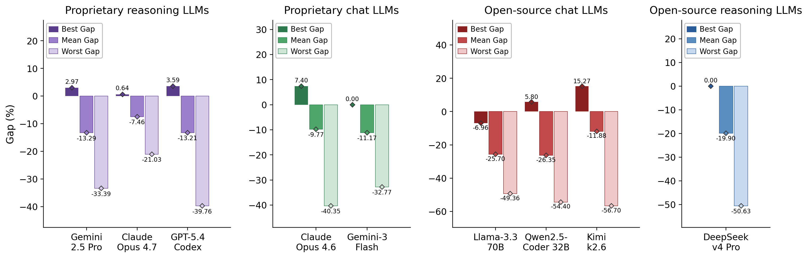
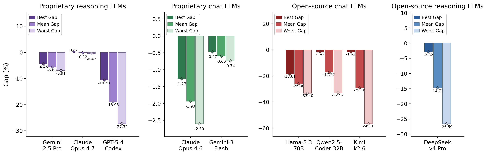
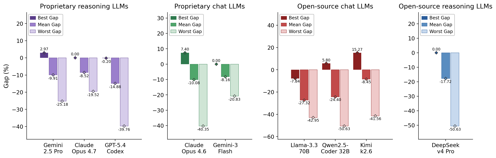
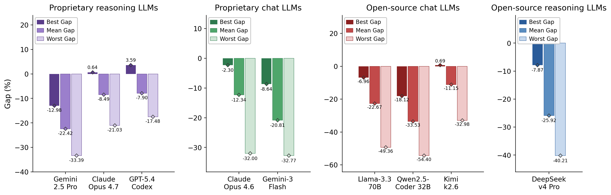
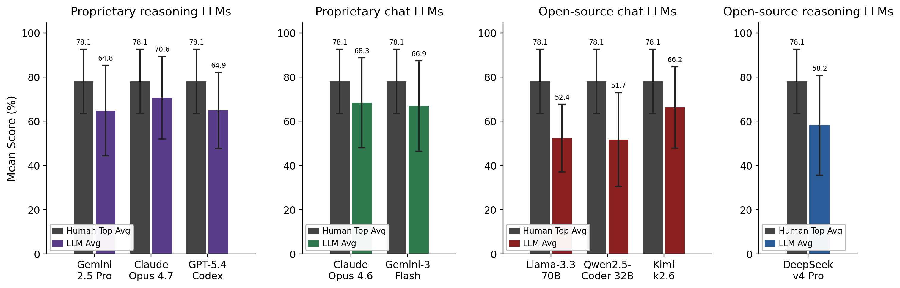

Results
Human Performance
Human scores vary substantially across competitions, reflecting task difficulty and domain complexity. Easy tasks (C03, C08) achieve high scores with low variance; Hard tasks (C02, C04, C18) show lower averages and larger best–worst gaps.
| # | Competition | Difficulty | N | Metric | AVG ↓ | STD | High | Low |
|---|
LLMs Performance
We evaluate nine leading LLMs on all 18 GNN-CB competitions using a fixed plan-then-code prompting strategy with a bounded execute-and-repair loop. Across 162 total model–task evaluations, LLMs surpass the Human Top score in only 19 cases, meaning that in more than 88% of evaluations no model reaches the performance achieved by the best human competitor. Overall, the results demonstrate that current LLMs consistently fall short of expert-level GNN competition performance regardless of task difficulty Fig. Overall LLM gap analysis on GNN-CB .

Open-source models generally exhibit larger average gaps and higher variance across competitions, indicating lower consistency and reliability. Proprietary reasoning and chat models perform comparatively similarly, with no clear systematic advantage for reasoning-oriented architectures. Among open-source systems, Kimi-k2.6 approaches the stability of proprietary chat models, while DeepSeek-v4 Pro remains competitive but less consistent on medium and hard tasks.
Easy classification tasks reveal that top proprietary models operate close to human baselines, whereas open-source chat models display larger negative gaps and wider best-to-worst performance spreads. As difficulty increases, mean and worst-case performance degrade substantially across nearly all models, highlighting the limitations of current foundation models under high-complexity graph learning settings. For more analysis see the figures below .



